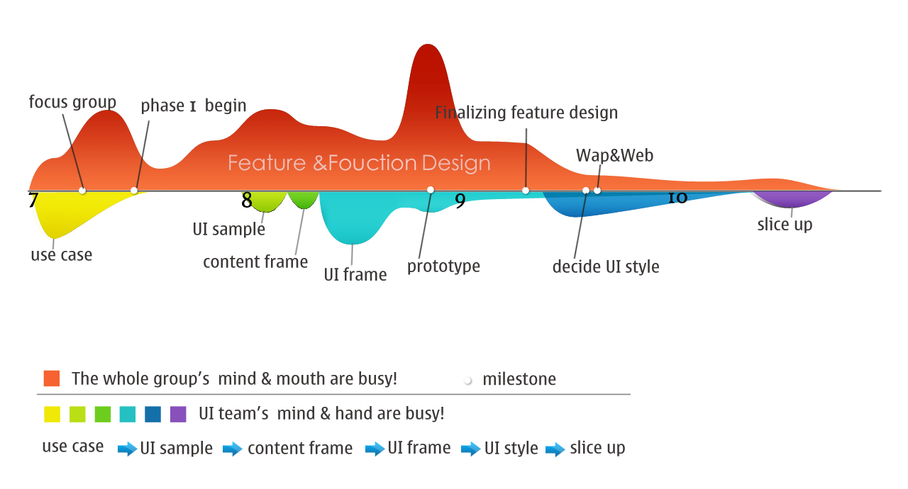
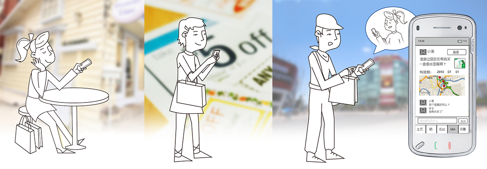
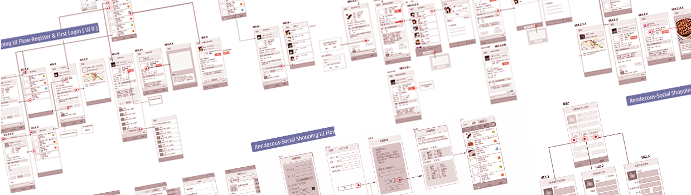
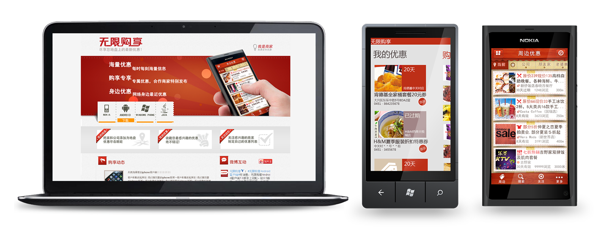
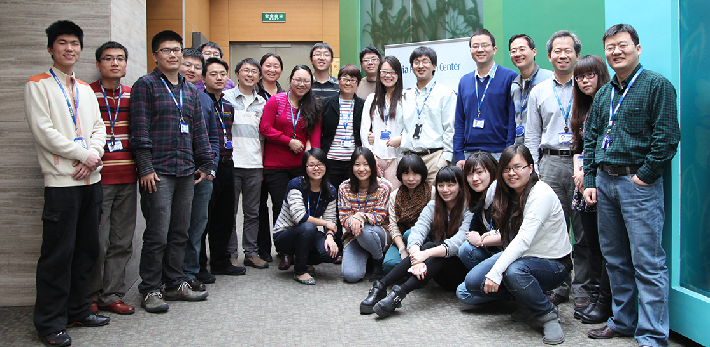

Rendezvous
Design for personalize discount mobile service based on users’ locationInteraction & UI Design
2010.6-2012.5
Background
Rendezvous is a free shopping discount recommendation mobile service. It can provide personalize coupon information based on the users’ locations and demands. Rendezvous is developed by Nokia Beijing Research Center, NRC Team which I had been as a design intern for two years. I‘ve been responsible for this project’s Interaction design and UI design from the beginning to the end. So I experienced a complete cross-platform application development process in which the user-involved design method was used, that’s enlightened me a lot.
Design Process
User Study
Online Survey: Collecting basic user data about shopping activity. Interview with Use case: We interviewed some target users, trying to make vivid personas and use cases. Focus Group with Persona: We choose 3 from 20 use cases and have a focus group with many shopping relevant users.
Interaction Design (wireframe)
After the features were decided, I began to design the interaction of the whole application, by starting with the information architecture and operating logic. Finally, I made more than 100 page wireframes in total, including pop-up. In this process, we refined the features with feature owners, because we are trying to find a balance between the demand of so many features and the experience of users in operation. And we also used wireframes as a way to communicate with clients and stakeholders such as feature owner, engineers, and developers. Over the course of a project the wireframe exercise functions as a stable base on which to consider changes, diverse user paths, and new requirements. Our engineers can start there work about API based on the wireframe flow.
Prototype (paper prototype & flash demo)
Test the usability of current information architecture . And get some quick feedback of our users in both content and operation. According to the percentage of completed task , the information architecture can be approved or further refined.
UI Design
I’ve been responsible for UI style design for three different systems, including website on PC, android mobile phone and WP7 mobile phone. After three different versions, we choose to use red as the theme color because in Chinese culture, red means prosperous life. It’s a very luck color, which is different from the other countries.
Design references were written by me for the UI implementation. In this process I’ve learned how to collaborate with engineers.
Thanks!
In Nokia NRC, I Learn how to communicate with different background people and how to present my idea. But the most priceless thing I get is more than design process and design skill, I get a big family…Thanks everyone!
---this photo was took on my farewell day Related Website Report:
promotion video
tencent download report
Merchent report